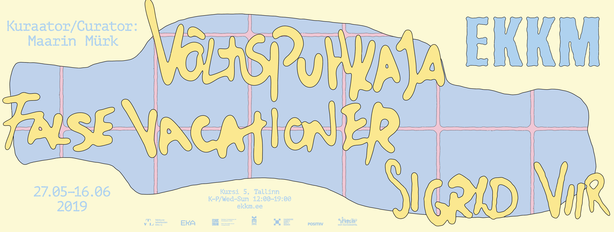

Graphic design · EKA Student project · 2025
As part of our Graphic Design Project course, we created poster series and new visual identities for past EKKM (Estonian Contemporary Art Museum) exhibitions. The assignment included designing eight static formats and two animation formats across four different exhibitions.
False Vacationer by Sigrid Viir explored the blurred boundaries between work and leisure in creative professions. The first poster uses an intentionally blurred background with cut-out imagery of a computer and writing desk to visualize how vacation and working hours merge for creatives. The second design draws from the exhibition's visual language, using the same color palette and tiling pattern to express the ironic nature of creative downtime, where even rest becomes productive.
Shelter / Sanctuary (varjupaik – varju paik) was a group exhibition curated by composer Helena Tulve, featuring works by Anne Rudanovski, Félix Blume, John Grzinich, Laura Põld, and Zimoun. The show created a contemplative space where visitors could experience new relationships with nature and themselves through sound, textile, and light. The first poster responds to this tender atmosphere with soft color transitions that echo the gentle sensory quality of the exhibition. The second design takes inspiration from the layered, tactile works, especially Laura Põld's large textile installations that transformed the museum into a protective, enveloping environment.


